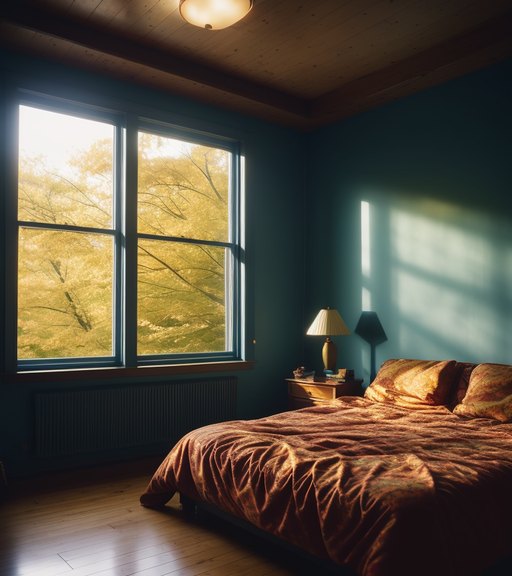
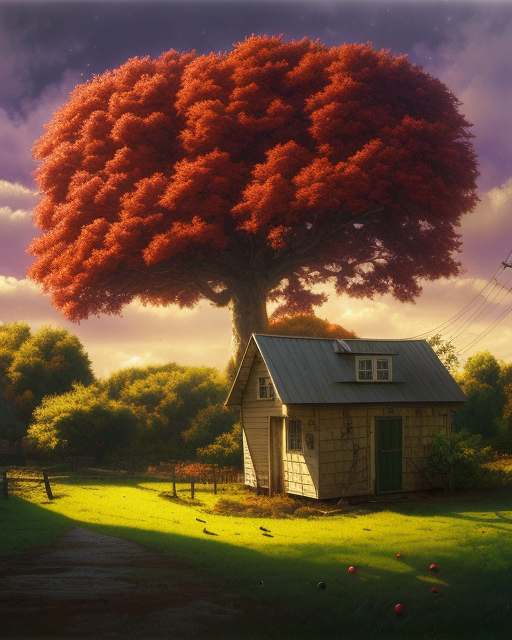
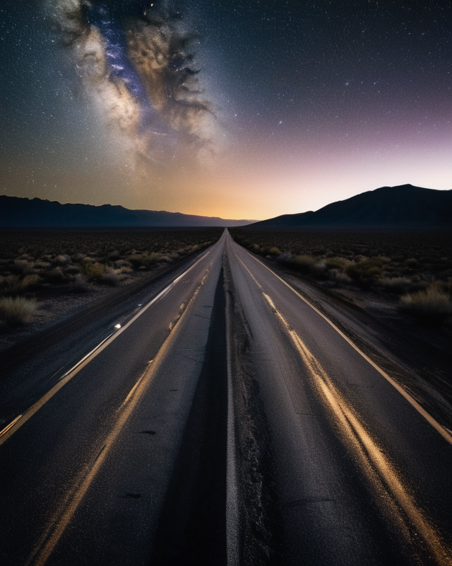

I oppened my eyes so fast with out warning or thought. I don't know what triggered my sudden awaking other than the fact that it's Christmas.
I focus on my bed room window and see that the sun wasn't even up yet. It was still dark but no longer the pitch of midnight. Knowing that it
was Christmas day prevented me from returning back to sleep. The curriosity provoked motivation to go see if Santa came!
Tossing the covers off me I lightly slide out of bed and begin sneaking out of my bedroom. I noticed the kitchen light was off indicating that
Mom and Dad must still be sleeping. They did't do anything befor brewing coffee first thing in the morning. As I round the corner exiting the
kitchen I slowly poke my head out to see if any one was out in the living room. "Nobodys up yet, Im the first one" I think to myself as I tip
toe futher into the living room to see the coffee table where we had left a plate of cookies and a cup of milk for Santa. Next to it was a note
my brother Tom and I had writen the night before asking Santa for an autograph. But nothing had been disturbed.
I went over to the tree to inspect the presents only to see the same few that Mom and Dad put there a couple of days ago. I was confused, sad
and disappointed. Just staring at the unchanged environment wondering if I was in fact a Good Boy this last year. Why hadn't Santa visited us? A
tear slipped out of the corner of my eye, tickling my check. I sat on the couch and let the feelings wash over me. Maybe that time I called Tom
"Dumbo" because he has big ears. Or the time I got him introuble for taking the last of the cookies, even though I did. What if it was something
far worse than being naughty or nice? What if it was much deeper like what Billy from my class said. He said His older brother is in the Sixth
grade and says that it's all a lie. There is no NorthPole. There is no Reindeer. There is no Elfs. There is no Santa. I thought that was just
another move of his, being the class bully and all. I just thought, well of course Santa exists. He is just an ugly bully. Well hes not really a
bully but he looks like one.
I burry my head into one of the pillows and weep as quietly as I could. After a few minutes I must have fallen back asleep because I was now
dreaming that my family was lost outside in the snow and freezing. It was sunset and I was trying to find them to give them handwarmers that I had.
I rememberd crying there too. My tears kept freezing and turning into Eye sicles. I thought it was a silly pun too, even for a dream. I had all
these Eye sicles around me making it hard to walk, not to unlike a couple feet of snow will do. As I was feeling the frustration of this seemingly
loosing battle, I began to hear jingling in the blury haze of the snowy slurry that blundered my abilaties of sight and mobility. At first they were
coming from ahead of me and then behind me. As I spun around to find the source of the noise, the jingling became more discernable and sounded like
chains. Eventually the sound was swirling around me from all directions. Just as I felt like I was having a sensory over load, a new sound came into
focus. The unmistake able sound of the snow crunching under the wait of something taking a step. And another. And another, even closer. I was
whipping my head around in circles to try and spy the maker of this aproach, but nothing. And as if standing behind me, something of the horned game
type let out a Grunt and surge of hot air on the back of my neck and in my right ear. This caused every muscle in my body to contract and convulse
in fright almost as if I had been shot.
Before I could let out a scream I woke up. Im in the living room on the couch still. The sun was just rising and starting to shoot beams of gold
warm light through the cracks of the blinds of the windows. they were bouncing off a few ornaments turning the livingroom into a circus of colors
and light. It was quiet. Once my senses came too I surveyed the room. I notice the cookie plate now only held two cookies and one had a bite taken
out of it. I gasped and leaned forword to inspect the cup. There was probably only a swig or two left. That sent me back into the couch in
astaunishment as I let out a small yip in excitement. I looked at the tree to be completely amazed at the beautiful sight. Presents stacked upon
presents all around the tree. I couldn't even reach the tree there were so many. But right up in the front was a book for me with a big bow on it.
It was a Mickey Mouse book; The Prince and the Pauper. I opened the book and a folded peice of paper fell out with what looked like a thin shaving
of birch bark. I picked up the paper and opened it revealing it was the note Tom and I had left. There was no autograph from santa. Just a bloody
looking dirty hoof print.
1997
Baseball.
Americas pastime.
I wipe the sweat from my brow as the sun staired down. The bill of my ballcap is rendered useless as the sun is
just above eye level. I'm only playing catch with my buddy Dan, but it's a fun challenge. Were playing along the
firstbase line just off the feild.
It is the end of the season and me and my team are having a Banquet to celebrate our run in the final tournament.
We dominated all summer. We were second in the league only but only because we missed one of the first couple games.
Chicken pox.
Im only 8 but I'm good at the game. I was constantly overhearing the other adults making comments back and forth
"He's a natural!", "'Raw talent' in that one" some would say.
My dad taught me everything I know. He was a coach himself and had played since he was a boy. He even took me to see
a few Mariners games at the the 'King Dome'. Edgar Martinez, Alex Rodriguez, Randy Johnson, Jay Buhner...Ken Griffey
Jr! They were living legends. Baseball was my thing.
Dan tossed the ball to me and I held my glove just below eye sight. I adjusted my body a little and 'THWAP' the ball
struck the palm of my mit. "Good Throw Dan. Excellent aim!" I say scooping the ball up with my free hand. I warn "Comin'
in HOT!" as I wrenched my arm back and unloaded a fastball in his direction.
'THWAAP!'
"Good catch!"
I was having a blast. I couldn't wait to eat! The adults were setting up the food tables.
"Pop Fly!" Screamed Dan as he lanched the ball into the sun.
The food smelt so good. I hadn't eaten at all that just so I could have room for everything. Mac n
Cheese, mashed patatoes, BBQ chicken, burgers, dogs. My mouth watered in anticipation. I was planning
on eating like a king this evening.
I was so lost in the smell that I hadn't heard the warning crys from a couple adults. I was trying to stay ahead of that
ball. I couldn't really see it but I knew its flight path. It would come into view and I'll be right under it.
Just as the ball finally came into view I was correct I was right under it. I reached my hand up in time for the bal to
fall right into the leather.
Before I could relish in my victory emulating catch, I'm jared with such stoping force my head hurts. I'm beyond confused
as my vision is not working correctly. Everything is dizzying and hard to make out or focus. The pain in my head was getting
mor intense and more percise. My hearing was impaired to a degree. It sounded like I was under and I could hear screaming
but it was muffled.
I tried to speak but I was incappable. I realized at that moment that the pain was radiating from my mouth. I let out a
deep groan in panic and pain. My eyes were swelling up with tears but my vision came to and I'm tangled in the aluminium
side line bleachers.
The cold metal shocked the rest of my body's senses back into order and I fall back to the ground as my dad flys from out
of no where to console me. The pain was so intese at this point and I felt like I was drooling alot. As painfull as this
was it was also extreamly embarrasing. I couldn't control my bodily functions properly. Trying to walk would have been
impossible had my mom not made it to me. Some how she levitated me away from the impact site.
I passed one of my teammates and saw the look of horror in his face as he pointed at me and said "I've never seen that
much blood in my life!"
My eyes widened as I look down at my hands cupped under my mouth to see the thickest red syrup like liquid I've seen this
close. Bright red flooded my hand like an overflowing tube. My mouth was like a leaky sink dripping into a bucket. The sun
light peirced it causing it to shimmer vibrantly. Mesmerizing!
Unfortunately I didn't get to eat like a king that evening and wouldn't even eat normal for the next few weeks and months
with all the surgeries.
When I was young my grandparents lived in a very nice old country home, just out side of town. The property must have only
been a few acres but as a child I imagined it to be much, much larger. My grand father came from a long line of Sweedish and
Norwegian farmers. Himself being of the second generation born in America. He would tell me stories and tales of the home
land, passed on to him by his grandfather.
The front lawn was perfectly manicured. The side yard that wraped around to the back yard was also very neatly kept. I
rather enjoyed the appearence of their house. From the outside it was very warm and inviting. The Triming was a soft brown
that looked very comforting above the white siding. The front entrance way was accompanied with a flowerpot growing a
sunflower that was as tall as me at the time. Yellow as the sun.
The front door was red and had an old horseshoe door knocker. Just inside was the front room and it was very cosey. The stone
fireplace warmed the wood pannled walls. The carpet was plush and felt as if you were stepping on a cloud. Soft on impact but
almost springy on take off. I couldnt speak much on the comfortablity of the couches as us kids were not allowed to sit on
them. They were wraped in clear plastic but they looked beautiful with their vintage floral patttern and hand carved wood frame.
The kitchen was through some french doors in the next room. It was open and was shared with the dining room. They had a very
lovely cabnet with very fancy plates and silverware. Past the kitchen was a small hallway that led to a mud room/laundry room
at the back of the house. At the halfway point of hallway was a bathroom to the left and to the right was a stairway leading
down to the basement and guest room.
They had some interesting old, and very odd things down their. Lots of antiques; tables, chairs, dressers, Paintings, wooden
hand carved scupltures; a large grandfather clock. It was a trove of mysterious belongings from unknown origins. The power of
curiosity in a place like that is almost debilitating to a child. One day my brother found me playing with Lincoln logs in the
front room on the floor saying "Hey" under his breath quietly. "I foun' somethin' on the stairs. Com'on I wanna show you!"
Like the pied piper and the spell that was cast on all the children in the town. I was compelled to follow. The air began to feel
still as we crossed the thresh hold from front room to kitchen to hall way and half way down the stairs. It was so quiet. My
brother pointed at a flag that was hung on the wall and a sign that hung above it that looked handmade and privative. There were
words chiseled into the face but they didn't look like English. Their were some letters and symbols that I didn't recognize. The
flag was a red background with a sideways blue cross and had a white border around the cross. As I got older I learned this was a
Norwegian flag from the 1800s.
My brother grabbed the bottom corners of the flag lifting them up to reveal a small door not much bigger than myself. He looked at
me and I stared back for a moment before he opened the door. A surge of cold, smelly, old, nasty air waffled out from the blackness
inside. We both groan in repulse trying desperately not to vomit. Once we settled my brother said "Climb on in, lets check it out."
As I reluctantly climbed in I tried to let my eyes adjust to the darkness. I scanned the crawl space of the house until I noticed
something move out of the corner of my eye and I refocused on an odd looking figure in the dark. It Lurched forward in my direction
and growled at me just as the light behind me was snuffed out from the little door slammed shut. For the moment I was paralyzed.
Completely strangled with fear. This Thing made a few thumping noise and sounds like something rustling around, getting closer. In
this moment I regained functionality of my body and mind and began banging and hitting on the door with every ounce of desperation.
The only two thoughts that flooded my mind was one of certainty and one of uncertainty. I was certain at this point that the sign
above the door was a warning in a much older language of some unholy creature from some nightmare in this waking world "Do Not
Enter!" The uncertain thought was more of a question. Was this terrible blood curdling scream that reverberated through my ears
into my skull and rattling my soul, coming from this unknown horror or was it coming from me?

Every day for as long as I can recall in my life,
I would inspect the condition of the world outside my bed room window. I open my eyes and lift
the covers off of me as I swing my legs off the side of the bed "What kind of day is it going
to be?" I think to myself letting my toes touch the floor before resting my feet all of the way
onto the cold hard wood floor and stand up. "What kind of clothes should I wear today?" I wonder
grabbing the thick heavy curtins that block all light. As I draw them back I'm no longer cut off
from the wounderful beauty that awaits outside.
I rub my chin as I ask myself "What shall I do today?" I feel alive seeing the sky and the
scattered clouds drifting freely. Seeing the birds fly from bush to bush and then landing on the
grass, pecking for worms. Retreating back to the trees off of the property. I sigh deeply when
I think "Why don't they visit my apple tree? It is old but it is large. There is plenty of space
for families of birds. My apple tree is beautiful. Its my absolute favorite tree.
My Father built the tool shed that sits under the apple tree. Theres alot of tools in there.
I spend alot of time in the tool shed. I have friends but none of them want to spend time with me
in the tool shed. Theres a lot of space in there. No one ever wants to stay and play. They all want
to leave and "This is my favorite place in the world" I pleed with them but they always try to leave.
They are scared of my tool shed for some reason. They think it's scary. I dont want them to leave.

They cry in the night usually. I think they have nightmares. Maybe if the birds would visit
the apple tree, my friends would be happy to stay. Maybe my friends wouldnt cry or have nightmares
anymore. They would see how beautiful the birds are and how wounderfully they sing. If only they
would be quiet long enough for the birds would visit. "Its really a lovely apple tree" I tell myself
as I watch the apple tree craddle the tool shed with all my friends waiting inside. "What a lovely
view to start the day!" I admire as I proceed to get dressed and go about my day...
Big Sky Montana!
What a lovely place! It holds onto an older way of living in certain areas, still carrying on from a
time when it was a new lifestyle for many. From hunting and fishing to log cabins, ranches, farms, and
homesteads, to the development of mountain roads, mining, railways, bridges, and highways that eventually
led to cities.
My Aunt lived in Gardiner, on the southern border of Montana, just outside the northwest corner of Wyoming.
On one visit during my boyhood, it had snowed a couple of days prior. I was surprised, feeling silly for
assuming it didn't snow there because I usually visited in the spring or summer. There was only an inch or
two, but it was enough to create a magical sight.
She stayed in an old log cabin nestled on the hillside of the mountain enveloping this small town. It was
serene up there. We arrived late at night, so we settled in, making ourselves comfortable and exploring
the cabin. I was there with my older brother, two cousins, and my two aunts. As a fourth-grader, I was an
incredibly curious boy. Unraveling the mysteries of a new place was like an adventure that drove me to
discover its truths. We called it a night as the midnight hour approached.
It was a strange new place. At times, in a half-waking stupor, I'd notice the mounted animal heads on
the wall and momentarily panic. Drifting back to sleep, I'd encounter strange dreams, each more bizarre
and ominous than the last. Eventually, the sound of birds chirping signaled the imminent sunrise. I gave
up trying to sleep and fixed myself some toasted Pop-Tarts and a glass of orange juice while everyone else
slumbered.
I ventured outside to further explore the property, now that visibility had improved with the melting
snow. Circling around to the back, I inspected the yard enclosed by its barbed wire fence. At the front,
across the road, an awe-inspiring view down the mountain overlooking Gardiner awaited. The ground was
littered with massive boulders, some as large as five feet in every dimension. I clambered onto one and
began hopping from boulder to boulder. After a few minutes, I started sweating and decided to tie my coat
around my waist.
Continuing on, my coat gradually loosened and eventually slipped off, falling between a few rocks.
Retrieving it, I paused to relish the view once more before heading back to the cabin. As I turned
to step onto the next rock, I suddenly found myself falling face-first. I attempted to brace myself
with my hands, but it was to little effect.
In a haze of confusion, I brought my hands to my face, cushioning most of the impact. The pain
hadn't struck yet. Thankfully, there was no blood. I cautiously inspected the inside of my mouth
with my tongue, only to be filled with absolute terror as I encountered something sharp at the
front. I exclaimed, "I broke off half of my darn tooth!"

The unrelenting wind tore through the bed of the pickup truck, hurtling down the deserted road. Above,
stars twinkled, a stark contrast to the chaos below. My eyes stung against the gusts, threatening tears.
Amidst the turmoil, uncertainty gripped me—I couldn't discern if I held my breath intentionally or if fear
stole it involuntarily.
Nate's terror mirrored mine, etched with the same dread. In the darkness, isolation surrounded us, marked only
by trees lining the desolate road.
Desperation pushed me to sit up, straining to peer through the rear window into the cab. Two figures sat
ominously in the front seats, features obscured by the dashboard glow. The speedometer needle danced erratically
at 90 mph, a chilling reminder of our perilous velocity.
A jolt seized the truck as we hit a bump, sending me sprawling. Fingers grasped for purchase, seeking anything
to anchor myself against hurtling into the night.
But there was nothing. I glanced back at Nate, his demeanor shifted, frozen in a catatonic state, detached
from imminent danger. His gaze skyward, clutching his chest, seemed disconnected. I sought solace or guidance
in the stars but found only questions in the chaos.
The truck steadied, Nate's trembling hand found mine, offering solace amidst the harrowing journey. His eyes
conveyed fear and determination. We had to take control, to escape our captors and end this nightmare.
Summoning courage, I whispered Nate's name, lost in the wind. He felt my urgency and nodded. Together, we planned
to make a break for it. Minutes turned to hours as the truck thundered on. We endured weather, terrain, and
challenges but never lost sight of freedom.
One fateful night, rounding a bend, Nate spotted an opening between towering trees, their branches reaching
out. We braced for change. With determination, we launched from the truck, bodies hitting the ground with echoing
thuds. Pain seared through us, but adrenaline fueled our escape.
We ran, each step propelling us closer to freedom. Pursuit sounds faded, and a small clearing welcomed us.
Collapsing onto the ground, we gasped for respite, holding blades of grass like life elixirs.
And then, just as we exhaled relief, we heard it—the distant revving of an engine. Panic seized us. The truck
emerged from the woods. We weren't escaping this harbinger of an unknown horror.
He was trying to focus on his tasks but could not let the intrusive thoughts go. He isn't often
like this. He's usualy a fairly well tempered man but the thoughts that he could not get out of
his head were the thoughts of dont think about those thoughts.
The thoughts slip in like an unwanted guest at the most inconveinient time. The power of sugestion
reflects the tones that reverberate in his mind. A car strayed off of a road and tares through an
award winning flower bed of a HOA Board members front yard. A Bowling ball strikes an unaware couples
picknic in a park leaving nothing but crumbs of a perfectly planed day between two lovers.
The winning lato ticket remained in the hand of a man on his way to claim his new found fortune
until his murderer pealed it from his fading warm hand. A child feeling the fear creep in as her
parents cloose the bed room door after saying good night and the shadows start dancing around in
the night. A lone soldier seperated from his squad, crawling through the brush of a forest in a
foreign country stumbled right into the enemys base.
He's one out of 7 billion who experience situations that can send the human mind to the darkest
depths. Far deeper than the deepest oceans. Far more truamatic than any external apocalypse. Its
the internal apocalypse. The kind of rapture that is experienced on an individual level. Its one
that has no Army, no forgiveness, no empathy, no company. It comes and goes as it pleases like
an astranged lover looking for another body to add to their list. The kind that becomes worse the
more one attempts to evade it like a chinese finger trap.
The secret is not to evade but to embrace. You can not break the ankles of thought. You must
understand its origins. You must lean into the firm hug the mind creates. Thoughts come and
go like the tide. You can only ride the wave or go under it. Going under is the thought of
escape. Riding is acceptence and adaptablity. Much like the wave we come and go. No Rock or
shore can stop the wave from lapping over and over. It has always been and since the earth
formed. Life walked out of that water because it rode the wave instead of going under it.
Thoughts opperate this way. Attempt to evade and you will be consumed. Embrace and it will
carry you to a new salvation. The thought will do the oposite of the attempted attention its given.
Your willfull thoughts of "Do" and "Do not" can create an alternative outcome in the mind.
Halloween went off with out a hitch this year. It was the first real Halloween since covid. People,
especially the kids had been hungry for the tricks but more importantly they had been hungry
for the treats. There was no reports of any crime this year. A strangely pleasant outcome for
such a frightful occasion. How ever the following day in a small town in Ohio, an entire neighbor
hood of children woke up to their parents missing.
The first reports came in rather early in the morning when children began waking up to get ready for
school. No parents could be found. Not an adult in a three block radius was accounted for, as a
matter of fact. Some Children were upset but curiously the majority of the children of the missing
adults were happy, joyful and excited even that their parents missing. One child was asked if he'd
like to give a statement. He stated "Im glad my parents are gone. I hope they never come back."
Weather this was some cult activity, an organized collective abandonment or something like a mass
kidnapping, not one adult known to be missing was ever found. After 20 years the case remains open.
But its a well kept secret within the community of the remaining children who were either sent to
live with family or became wards of the state; foster care. One of the kids who was not happy about
his parents disappearing was Wade Clemmons and he was convinced that the other kids had something
to do with it and for years did his own investigating. He would over hear groups of kids talking and
mumbling amongst them selves about some ritual on Halloween night and to not forget to bring "the stuff".
He found it rather curious at the time but hadn't thought much about it at the time. It seemed that all
the kids were in on it. He was kind of an outcast and a loner so he was use to overhearing all sorts
of drama or shit talkin' if you will. But he could tell that there was something planned and from the
sounds of it he didn't want to be involved or near what ever they all were planning.
Halloween night came and he and his mom were out trick or treating and towards the end of the night he
noticed all the kids with out parents heading in a specific direction. His mom also noticed and asked
Wade if he wanted to go see what all the fuss was about. Maybe there was a supper scarry house down
the street. He declined and she further offered to hang back if her being with him would embarrass
him. Be declined again assuring he that he wasn't embarrassed about his mom being with him. so they
continued on their way and made it home safe and sound. Dad was already in bed. They counted Wades
loot and went to bed. When he woke up the house was empty. He spent the next couple weeks infiltrating
the different groups of kids to obtain intel on what happened that Halloween night, before the
inevitability of them all being moved to new schools.
The most he ever learned was that the ritual was a success and they would praise their achievement through
a hand gesture and a specific phrase. pointer and middle fingers up on the left hand and the Phrase is
"Ode to the Ole Hallowed Eve, on this night the kids were freed" Unfortunately no one talked specifically
about that night and what they did or how it was done. He moved in with his aunt and uncle in a different
school district. He only ever saw two or three of them kids a couple times here and there. When he noticed
them they would see him and avoid him. Disappearing all together.
As he got older he would make trips back to that old neighborhood and investigate the area. He walked down
the street in the direction he remembered from that night. It lead into a woodsy area of town and if
you follow the road all the way to the end, there is an old abandoned orphanage that had been closed
down for decades. Wade's heart raced as he approached the imposing structure. The orphanage stood there,
shrouded in darkness and mystery, its windows broken, its walls covered in graffiti. He felt a chill
run down his spine, but he pushed forward, determined to uncover the truth.
Entering the abandoned building, Wade's flashlight pierced the gloom, illuminating the forgotten halls and
echoing corridors. Each step echoed, adding to the eerie atmosphere that surrounded him. As he explored
further, he stumbled upon a hidden chamber deep within the bowels of the orphanage. Inside, he found
remnants of the ritual: strange symbols etched into the walls, candles still flickering with a dim light,
and an altar adorned with dried blood.
His hands trembled as he pieced together the horrifying truth. The children of the neighborhood had indeed
orchestrated a ritual on that fateful Halloween night, sacrificing their parents in exchange for some
twisted form of freedom. But what they had unleashed was far darker and more sinister than Wade could
have ever imagined.
Before he could make sense of it all, he was ambushed by the remaining members of the group. They emerged
from the shadows, their eyes devoid of humanity, their faces contorted with madness. Wade fought valiantly,
but he was outnumbered and outmatched. In his final moments, as he lay battered and broken on the cold floor
of the orphanage, he whispered a prayer for redemption, for justice to be served.
But justice would not come for Wade. As his vision faded and darkness consumed him, he realized the horrifying
truth: the children had become something beyond human, something monstrous and unholy. And in their eyes,
he was nothing but a sacrifice, a pawn in their twisted game of power and control.
And so, as the world remained oblivious to the horrors that lurked in the shadows, Wade's name joined the
countless others who had dared to uncover the truth. But even in death, his legacy would live on, as
a warning to those who dared to delve too deep into the darkness that lurked beneath the surface of
their seemingly ordinary world.
Its taken me nearly 20 years to make sense of something I happened upon for the first time as a teenager.
There are said to be old service tunnels that run from the naval-shipyard to various locations under my hometown, believed to have been originally built around WWI. But In the early 1940s, the main tunnel was opened as a fallout shelter capable of holding 10,000 people . The rest of the tunnels were supposedly closed off when new construction around town occurred in the 1960s and 70s. My grandpa worked construction on what at the time was to be the tallest building in town, adorned with a clock at the peak. He like to brag about having "put a hand on nearly every rock in that build'n" or saying "I remember when that was a pile of rubble until we worked on it". He also liked to say "There are still many old places that hold many old secrets for those brave enough to seek them" but I assumed that he meant the bottom of a bottle.
The main streets are a reminder of the infrastructure built in the 1930s and 40s. Many of the businesses on the street were the ground level of a larger office or warehouse buildings. Some were single story buildings, shoehorned in between the larger ones. There is also a Masonic Lodge history with the town. They built the original temple way back then, and then a couple decades later, built another building and moved there. Their presence is clearly noticeable in the architecture all over the town. There are even plenty of houses in town that were built in the same fashion.
It's amazing how small town gossip can be passed down from generation to generation. I first heard about the tunnels as a young boy from a classmate in the second grade. She said that her dad worked on the base(it’s a naval shipyard) and was an important man because they had an escape tunnel under her house. I think I believed her at the time but I never really saw her after around that point. Even at that age I associated her as a Navy brat. I just assumed they moved.
I never really gave it much thought though until I was about 16, in the year 2005. I was a punk teen. I smoked weed and cigarettes as often as I could. I skipped a lot of school, choosing to go get fucked up and skateboard on private property somewhere. I spent a lot of time all over the town and in the most secluded locations. As a skater I'm telling you there were/are some sick spots! A majority of the buildings are that original brick masonry. Stair cases, gaps, banks, ledges, rails. The biggest problem is that skateboarding was a form of vandalism to public property. It was that year after enough people kept getting into trouble that the skaters of our community petitioned city-hall to have a skatepark built. They listened and even let us help design it. It definitely mimics some of the most popular aspects from downtown.
I stumbled upon the first of the tunnel entrances down an alleyway in downtown. The kicker is that, of course it was past midnight and of course I had been drinking and smoking pot. But that's also why I was in the alleys. Anyone hanging out there wasn't looking for any attention. Yes looking back I regret doing all the stupid things I did. I knew the area like the back of my hand but for some reason I was never able to find an entrance while sober. The alley way is particularly remarkable and I had been down it numerous times before. It’s the only one that has a man bridge over the alley connecting two separate buildings. It’s like a hallway fully enclosed with windows, matching the appearance of the buildings. I had just passed under it and to the next building where a smaller dumpster sat. The dumpster had one side pulled away from the building it was butted up against. It was dark but I could see a gaping dark hole behind and underneath the dumpster. I pulled my lighter out to reveal a staircase leading under the building. It was hard to see but I could tell from the edges of the opening that there was supposed to be a metal or wooden cover.
Intrigued I pulled out my old Nokia cellphone. The screen, albeit small and dim, in the dark-dark was better than nothing. I didn't want to burn myself and wanted to conserve my lighter for other things. I don't know why exactly I felt I needed to but I dropped down behind the dumpster to the stairwell and held my phone up high like a lantern. I was instantly reminded of the time my brother showed me the crawl space under my Grandpas house. It was like there was a static in the air. A vibration that lulls rational thinking towards curiosity. The stairs went down maybe 15 steps to a flat that went through a doorway on the left. Curiosity out weighed rationality naturally as it were in those days and I made my way down to the flat as quietly as I could. As the last bit of ambient light and noise from the dark quiet alley disappeared, the calm stagnant air in the concrete passage way that acted like an echo chamber was a stark shift in environment.
There was a hallway beyond the doorway that was extremely narrow and not very long. It was only wide enough for one person. It was probably 15 feet in length or so. As I slowly proceeded, the hallway dumped out into a much larger tunnel. I remember thinking "a bus could fit through here!" and it stretched far beyond the dim lights reach of my Nokia. I debated on whether I should just head back and decided now was an appropriate time to spark up a smoke, which didn't mix well with the stale air. Replacing my light source with the flame from my lighter provided enough light to see a panel of switches on the wall next to the smaller tunnel. I flipped one and the main tunnel lit up surprisingly, popping a humming to life. It was at least a football field in length. There were a few other similar little tunnels in various locations along this larger one.
As I was taking in just how long it was I peered from one end to the other and down at the farthest end was what looked like a person. The realization snapped me out of my wonderment. I was now uneasy at the thought that someone was down here just hanging out in the darkness. The more I focused on the figure the more it appeared that it was just standing down there staring at me. I looked the other direction but didn't notice anyone or anything. Taking a drag as I looked back towards the figure who I was now significantly closer to, I stopped in mid step. I hadn't been aware of it but I had been walking towards the figure. That's when everything in my body told me to leave now. And in that very moment the figure began running at me full sprint. There was no time to make sense of how or why I was walking towards the figure or why I was even down here in the first place as I turned running as fast as I could.
When I got to the smaller tunnel I took the opportunity to glance back over my shoulder while rounding the corner. To my absolute terror the figure was right where I was when I started running. I could hear the foot steps echoing off every surface followed with the creepiest snarling. I hit the stairs skipping three or four steps at a time. The light from the night city sky poured over the remaining steps and I nearly forgot the drop I had made getting down there. As I reached for the side of the stair well to pull my self up I could here that thing hit the stairs. With every ounce of adrenaline I heaved myself up and rolled out into the alley. Frantically I picked myself up and rammed into the dumpster closing the gap and began to head to the main street. That night I sprinted the nearly 1.5 miles back home without stopping or looking back.
I wish I could say that I forgot about that night and the tunnels to save myself some sanity in life. If I had only known this was the beginning of something much older and darker than I could have imagined. It took me a few weeks to shake the initial shock of that encounter. Eventually I went back during the day but couldn't even find the dumpster. I put it out of my mind until about six months later when an opportunity came up to visit with my grandpa.
He was not in the best of health as he was a life long alcoholic. He had decided to stop drinking one day which caused his body to shut down due to a lack of alcohol in the bloodstream. On top of the alcoholism he was an onery old man. More so just an asshole. He was in the hospital and so my mom asked if I would come with. He lived a few towns over and she didn’t want to be by herself for the multiple hour drive. I hadn’t seen him in a couple years at this point. The last time I had visited, he got pissed at my mom for helping him with something and he called her a bitch right in front of me. I never forgave him for that and had boycotted going since. But now I was older and understood his issues and the nature of the beast as it were.
We got to the hospital late in the evening and didn’t have to wait long till he was being discharged. Once we got back to his fifth wheel trailer and settled, my mom had to run to the store to get us some food and things for the night. I stayed to keep an eye on him. He was just sitting in his chair trying to get comfortable so I took the opportunity to ask him how he was doing?
He kind of growled as he said “Well, I can’t tell. Might almost be better off dead.”
"Probably!" I thought to myself. Although I don't ever remember him being mean towards me, seeing how he treated his own daughter, my Mother, took away any sympathy I had for him and his choices. At this age I was full of piss and vinegar and always was protective of my mom. That's how my dad raised me. Above all else in our house, You WILL show your mother respect. She was strict and even though I became rebellious, If I were caught and called out for whatever wrong doings, her disapproval gave me the most guilt.
"I understand that grandpa. It can't be easy." is what I actually said to him and followed that up with "I bet you been through worse, huh?"
"Worse? Well, that depends. I'd probably say this is the worst physically. Mentally though? Nahhh..Diein' is diein'. When you don't die your stuck with all the trauma" he said to me as his four head scrunched up as if he was focusing on a thought.
"What, like things from your past?" I asked almost expertly. And he just nodded staring out the little window next to his recliner.
"Yeah, you could almost say some things just follow you no matter how far you get."
I chose to strike my question "You once told me you worked on a lot of the buildings in downtown by moms. You ever see anything strange around there?"
His brow was still furrowed but his eyes widened. I could tell he clenched his jaw because I heard him grit his dentures and the muscle was flexing. At first I thought he was gonna get mad at me. He turned to look at me and just nodded his head. I looked down after a few seconds and reluctantly said "Me too, grandpa"
I don't know what I was expecting but he was quiet as I returned eye contact. He stared me up and down for a moment and then returned his attention out the window. He said "I can feel it, Boy!" as he nodded a few more times.
"It was down an ally and there was a stairwell" I started but he interrupted me.
"I know what your talk'n bout, Boy! Did it touch you?" he asked sternly.
"No, no I was able to get out of there"
"Good!" he said before I could continue.
"Look, I can answer some questions, but the answer may be in the form of another question." he said still staring out the window. His brow slightly more relaxed now. He spoke with a tone of disappointment but also with a layer of urgency. "Well, boy? I aint got long for this world so on with it before your mother gets back. I know how she gets."
Hearing all this I realized just how unprepared I was for this situation.
"When did you discover the tunnels?" I asked bluntly.
"1968" he returned similarly.
"How?" I fired.
"Working in downtown, and stopped in the bar after work one night. Went out into the alley to get some fresh air and wandered upon a stairwell. I felt the need to go down and check it out." He paused a moment as if it was on loop for a second.
"Got into the main tunnel and saw some guy down the way. I turned to leave and he started running for me." He motioned down and shook one of his feet. "I Learned that day that boots are not a fast mans attire. Although I made it out, it was a nightmare. It was such a struggle."
"Did you every find it again?" I asked.
"Yes on accident. Similar situation, but at a different location. It was a different entrance but it led into the same tunnel. I was with a coworker of mine at the time. I briefly told him about my previous encounter down there and when we saw the person he decided to confront the guy. "It was about here in his story that his tone got almost desperate sounding. "Well the guy charged my co-worker and plowed in to him like a football player, but" he said taking time to articulate what happened next "The guy disappeared into a cloud or something."
"A cloud?" I questioned skeptically.
"A mist, a cloud, smoke what ever you want to call it...just poof. my coworker was dazed and coughing because of the cloud but he made his way back out of it and we high tailed it out of there."
I didn't know what to say so I just let he said linger. After a few seconds he continued "I'm gonna be straight with you boy, he ended up dyeing a couple days after that. Apparently he had stalked some lady and her man confronted him. He attacked the man with a smoke bomb allegedly but the man was carryin' a 45 and unloaded it into my co-worker."
I was speechless now as he went on "You know what that man ended up doing? A few days later he ended up killing that lady. The neighbor heard her screaming and called the police. They found him performing some satanic ritual they said. He was in the middle of dismembering her body and four Officers shot him dead...And yes those Officers wound up dead also."
Just then my Moms headlights illuminated the trailer through the cracks of the blinds and curtains. He then quickly said to me "You go learn more about us Norwegians, the Natives that lived there and the history of that town if you want more info but stay out of them tunnels boy! And stay off of the alcohol and drugs too, or you'll be like me" he said sarcastically making a face he called the clint Eastwood and I let out the first snicker I've had all day.
"Lastly, don't tell your fuckin mom about this conversation. I still catch shit for the "King of the Road" convo when you were a little snot."
I nodded to him respectfully and just said "Sure Grandpa, I won't. Not this time."
My mom came in and got him off to bed. We stayed there the next night and after that one of my aunts came to watch him for the next couple days till he was better again. This would be the last time I would talk to him.
A year passed after that eerie conversation with my grandpa, and I couldn't shake his words or the unsettling encounters in the tunnels. My curiosity, though dampened by fear, was still very much alive. After his death, I found myself researching the town's history, as he'd suggested. The information I uncovered was vague and fragmented, but there were recurring references to old folklore about the tunnels and their origins. They were said to have been built by the earliest settlers, but before that, the land was sacred to the local Native American tribes, who spoke of underground spirits that guarded the earth.
These spirits were said to manifest as shadows or mists, leading those who encountered them into madness or worse. The tales were mostly dismissed as superstition, but given my experience and my grandpa's story, I wasn't so sure.
Years went by, and the mystery gnawed at me, especially as I heard whispers in town about people disappearing near the old alleyways. The tunnels were always mentioned in hushed tones, like an urban legend that no one wanted to believe but everyone feared might be true.
One night, in a moment of madness or perhaps bravery fueled by too many drinks, I decided to return to the tunnels. I needed to see if the stories were real, or if they were just the product of a drunken imagination, mine and my grandpa's.
I found the alley with the man bridge, exactly as I remembered it. It was late, the streets were empty, and the air was thick with an eerie silence. I walked cautiously, my breath shallow, my heart pounding in my chest. And there it was—the dumpster, slightly ajar, revealing the same dark opening. The sight of it sent chills down my spine, but I pressed on, compelled by some inexplicable force.
This time, I was prepared. I brought a flashlight and a knife, though I wasn't sure either would do me much good. As I descended the stairs, the static in the air returned, that same oppressive vibration that dulled rational thought. My flashlight revealed the narrow hallway and the switches just as I remembered. When I flicked them, the tunnel lit up again, just as before.
But this time, something was different. The air was colder, and the tunnel felt even more oppressive. I walked cautiously, every footstep echoing louder than the last. I reached the main tunnel and was greeted by a sight that made my blood run cold—there were two figures this time, standing at opposite ends of the tunnel.
I froze, my mind racing. I couldn't run past both of them, and retreating meant certain death, or worse, an encounter with whatever these things were. One figure began moving toward me, slowly at first, then faster as if it had just noticed me. The other remained still, watching.
With no other options, I bolted down a side tunnel, one I hadn't noticed before. It was narrower, darker, and more claustrophobic, but it was the only way out. I ran blindly, my flashlight flickering as the batteries began to die. I could hear the footsteps behind me, growing louder, closer.
I stumbled through the darkness, the air growing thicker, harder to breathe. The tunnel twisted and turned, and I could feel the presence of something ancient and malevolent all around me. My flashlight died, leaving me in pitch blackness, the footsteps now almost upon me.
In my desperation, I remembered my grandpa's words: "Learn more about us Norwegians, the Natives that lived there and the history of that town." But it was too late for that. I was lost in the darkness, with no way out. I could feel the presence closing in, could hear the whispers of the spirits or whatever they were, calling out to me.
Then, just as I thought I was done for, the tunnel opened up into a small chamber. In the middle of the chamber was an old, weathered stone altar, covered in ancient carvings that I could barely make out in the faint light that seemed to emanate from the walls themselves. The air was different here—calmer, almost peaceful.
The footsteps stopped at the entrance of the chamber, and for a moment, there was silence. Then, one of the figures appeared, but it didn't enter. It stood at the threshold, almost as if it was afraid to come closer. I realized then that the altar was some kind of protective barrier, something the spirits or whatever they were couldn't cross.
I approached the altar, hoping it might offer some clue, some way out. As I touched the carvings, I felt a surge of energy, like a jolt of electricity running through my body. The carvings began to glow, and the chamber was suddenly bathed in a bright, warm light.
The figure at the entrance let out a terrible, inhuman scream and vanished into the shadows. The other figure, the one that had been pursuing me, appeared at the other entrance to the chamber but was also unable to enter. It too screamed and disappeared, leaving me alone in the chamber.
I don't know how long I stayed there, but eventually, the light began to fade, and I knew I had to leave. The tunnel behind me was silent, the oppressive air gone. I made my way back to the surface, the journey out far easier than the one in.
When I emerged from the alley, the sun was just beginning to rise, casting the town in a soft, golden light. I was alive, and more importantly, I was free. The tunnels still held their secrets, but I knew now that I was never meant to understand them fully.
As I walked home, exhausted but at peace, I realized that the legend of the tunnels wasn't just a story. It was a warning, a reminder that some things are better left buried in the past. And I, for one, had no intention of ever going back.
The town kept its secrets, and now, I had one of my own—a final encounter that added to the legend of the tunnels, a story I would never tell, but would always carry with me.